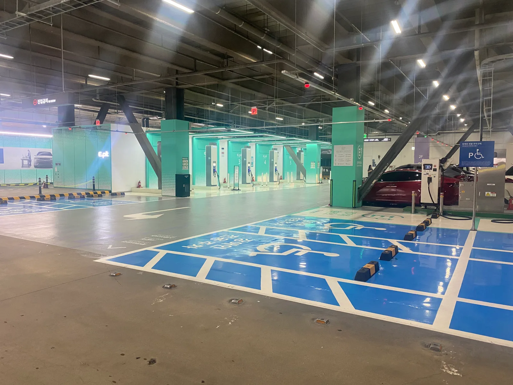
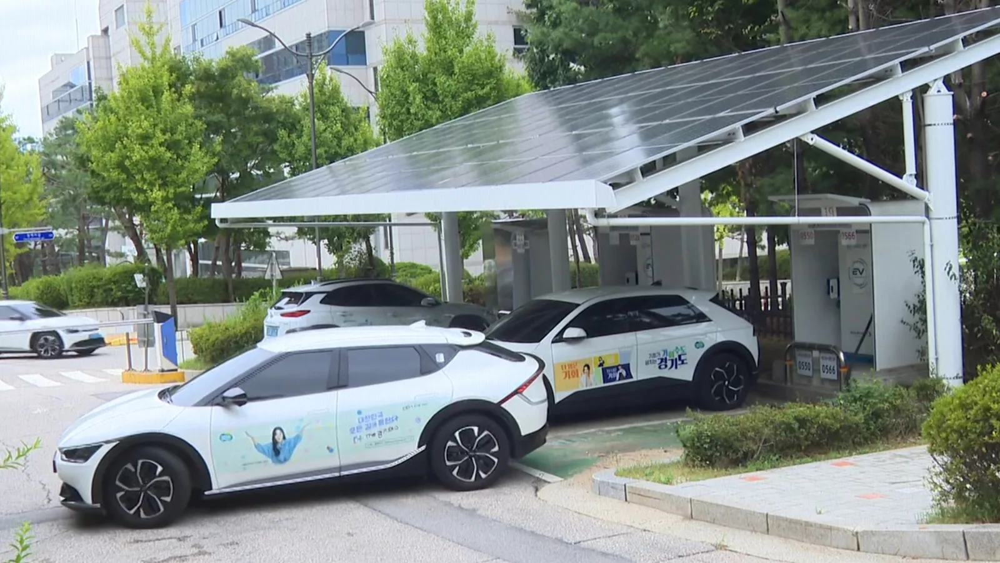
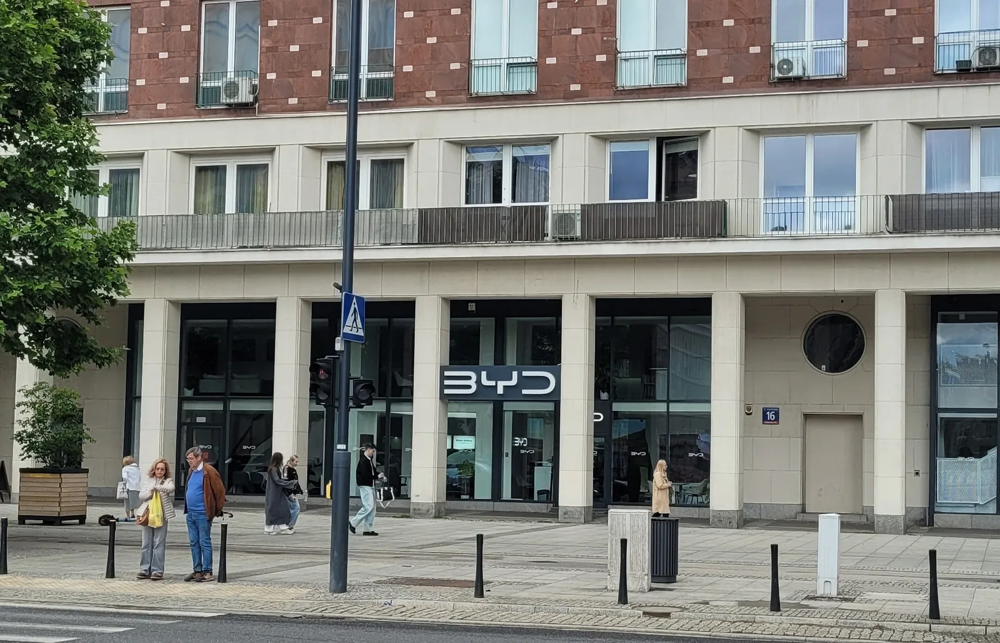
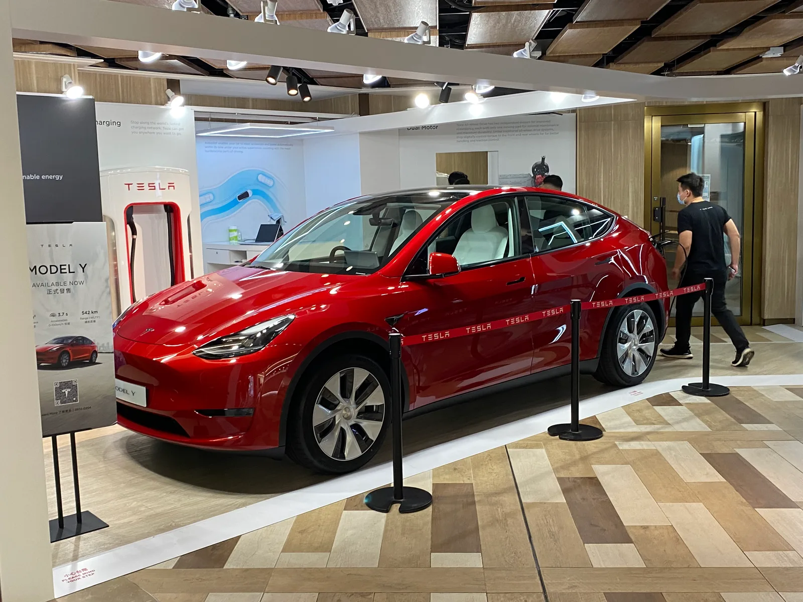

▲ 보조금 공백기에도 전기차 충전 인프라와 신차 프로모션은 멈추지 않고 있다 ⓒ Wikimedia Commons
매년 이맘때면 반복되는 일이지만, 올해는 유독 눈에 띈다. 정부의 2026년도 전기차 보조금 예산이 다음 달(10월)이면 사실상 소진돼, 새해 보조금 지침이 확정되는 시점까지 3개월 이상의 '보조금 공백기'가 발생할 전망이다. 통상이라면 이 시기 신차 판매가 주춤해야 정상이다.
그런데 현실은 정반대로 흘러가고 있다. 테슬라는 '테조금', BYD는 '비조금'이라 불리는 자체 할인을 내놓고 있고, 현대차·기아 역시 대규모 가격 인하와 금리 프로모션으로 맞서는 중이다. 정부 보조금이 끊긴 자리를, 완성차 업체들이 스스로 채우고 있는 셈이다.
1. '테조금'과 '비조금', 대체 무슨 뜻인가
'테조금'은 테슬라(Tesla)와 '보조금'을 합친 말, '비조금'은 BYD와 '보조금'을 합친 말이다. 둘 다 정부가 지급하는 공식 보조금이 아니라, 제조사가 자기 돈으로 얹어주는 할인을 가리키는 업계·소비자 사이의 신조어다.
| 제조사 | 모델 | 자체 할인액 |
|---|---|---|
| 테슬라 | 모델3 RWD | 168만원 |
| 모델3 퍼포먼스 | 200만원 | |
| 모델Y 프리미엄 RWD | 170만원 | |
| 모델Y 프리미엄 롱레인지 AWD | 210만원 | |
| 모델YL | 215만원 | |
| BYD(7월부터 지급) | 아토3 | 126만원 |
| 돌핀 | 109만원 | |
| 씨라이언7 | 152만원 | |
| 씰(후륜/사륜) | 169만원 / 151만원 |
📍 왜 수입차들이 '자체 보조금'을 만드나
정부 보조금만으로는 국산차와의 가격 격차를 좁히기 어렵기 때문이다. 국내 배터리·부품 사용 비중에 따라 보조금이 가산되는 구조상, 수입 전기차는 상대적으로 낮은 국고 보조금을 받는 경우가 많다. 특히 BYD는 지난 7월 전기차 보급사업 수행자 평가(공급망 기여도 등 5개 항목, 60점 기준)에서 기준 점수에 미달해 국고 보조금 대상에서 아예 제외됐고, '비조금'은 이때부터 시작됐다. 반면 테슬라는 평가를 통과해 보조금 대상 지위는 유지한 채, 상대적으로 낮은 지급액을 자체 할인으로 보완하는 쪽에 가깝다. 테슬라·BYD 입장에서는 이 격차 혹은 공백을 스스로 메우지 않으면 국산 경쟁 모델 대비 실구매가에서 밀릴 수밖에 없다.
2. 왜 매번 '보조금 공백기'가 생기나
보조금 공백기는 제도 자체의 구조적 문제에서 비롯된다. 환경부(현 기후에너지환경부)가 관장하는 국고 보조금은 연 단위 예산으로 편성되고, 한 해의 예산이 소진되면 그해 신청은 그대로 종료된다. 문제는 다음 해 보조금 지침이 통상 1월 말~2월 초에야 확정·공고된다는 점이다.
✅ 공백기가 생기는 구조
· 올해분 소진(2026년 10월경) → 신차를 사도 당장 보조금을 받을 수 없는 기간 시작
· 내년도 지침 확정(통상 1~2월) → 차종별 지급액, 지자체별 물량 등이 새로 공고됨
· 지자체 보조금 신청 개시는 이보다도 더 늦어, 대부분 2월 말~3월 초 시작
· 이 사이 3개월 이상, 사실상 보조금 없이 차량을 인도받아야 하는 기간이 발생
정부도 이 문제를 인지하고 있다. 2025년부터는 연초의 '전기차 판매 절벽' 현상을 줄이기 위해 지침 확정·공고 시점을 최대한 앞당기려는 움직임을 보이고 있지만, 예산 자체가 연 단위로 끊기는 구조가 바뀌지 않는 한 공백기 자체를 완전히 없애기는 어렵다는 것이 중론이다.

▲ 지자체 보조금은 국고 보조금보다도 신청 개시가 더 늦어지는 경우가 많다 ⓒ Wikimedia Commons
차종별 보조금 지급 대상과 최신 공고 현황은 무공해차 통합누리집에서 확인할 수 있다. 무공해차 통합누리집 바로가기
3. 공백기인데 왜 할인은 더 치열해지나
역설적이게도, 보조금이 끊기는 시기일수록 완성차 업체 간 판매 경쟁은 더 격해진다. 보조금 공백을 이유로 소비자들이 구매를 미루면 그만큼 판매량이 줄어들기 때문에, 제조사들은 그 공백을 자체 할인으로 메워서라도 판매를 이어가려 한다.
📍 현대차·기아의 대응 — 가격 인하 + 금리 혜택
기아는 EV5·EV6 등 주력 전기차에 최대 300만원 가격 인하를 단행하면서, 여기에 저금리 할부 프로그램까지 추가로 얹었다. 국산 브랜드 입장에서는 이미 보조금에서 우위를 점하고 있음에도, 수입차들의 자체 할인 공세에 밀리지 않기 위해 추가 카드를 꺼낸 셈이다.

▲ BYD는 국고 보조금 대상에서 제외된 지난 7월부터 자체 할인('비조금')을 지급하며 국내 판매를 이어가고 있다(사진은 해외 매장) ⓒ Wikimedia Commons
테슬라 역시 마찬가지다. 모델3·모델Y 라인업 전반에 걸쳐 168만~215만원 규모의 자체 할인을 유지하며 공백기에도 판매 흐름을 끊지 않으려는 모습이다. 지피코리아는 이런 흐름이 연말로 갈수록 "더욱 치열해질 전망"이라고 내다봤다.
✅ 완성차 업체가 공백기에도 할인을 유지하는 이유
· 연말까지 판매 목표치를 채워야 하는 압박
· 경쟁사가 자체 할인을 먼저 시작하면, 따라가지 않으면 점유율을 잃는 구조
· 다음 해 보조금 지침이 나오기 전까지 재고를 쌓아둘 수 없는 사정(신모델 출시·연식 변경 등)
4. 국산차가 수입차보다 400만원 더 받는 이유
이번 공백기 할인 경쟁의 배경에는 국산·수입 전기차 간 보조금 격차도 자리한다. 국산 전기차는 기본 보조금에 전환 지원금 등이 더해지며 국고 보조금만 최대 400만원 수준까지 받을 수 있는 반면, 수입차는 이보다 낮은 경우가 대부분이다.
| 구분 | 내용 |
|---|---|
| 국산 전기차 | 기본 보조금 + 전환 지원금(폐차·중고 판매 후 구매 시) 등을 더해 국고 보조금만 최대 약 400만원 수준까지 지급 |
| 수입 전기차 | 테슬라·폭스바겐 등 일부 상위 모델을 제외하면 100만~200만원대에 그치는 경우가 많음 |
| 격차의 배경 | 국내 배터리 셀·모듈 사용 비중, 배터리 안전관리시스템(BMS) 평가 결과 등에 따라 가산점이 부여되는 구조 |
📍 형평성 논란도 함께 존재한다
이 같은 구조를 두고 "국산 배터리 산업 보호를 위한 정당한 정책"이라는 시각과, "소비자 선택권을 사실상 제한한다"는 비판이 함께 제기돼 왔다. 수입차 업체들이 '테조금'·'비조금' 같은 자체 보조금을 만들어낸 것도, 이 구조적 격차를 시장에서 스스로 상쇄하려는 대응으로 볼 수 있다.
5. 지금 사는 게 유리할까, 기다리는 게 유리할까
결론부터 말하면, 무조건 기다리는 것이 능사는 아니다. 보조금 공백기 동안 정부 보조금을 못 받는 손해는 차종에 따라 다르지만 대체로 100만원 이내로 알려져 있다. 반면 지금 당장 활용 가능한 제조사 자체 할인(테조금·비조금, 현대차·기아 가격 인하)은 이미 100만원대 후반에서 300만원대에 이른다.

▲ 완성차 업체들은 전시장 프로모션과 자체 할인으로 보조금 공백을 메우고 있다 ⓒ Wikimedia Commons
✅ 구매 시점 판단 체크리스트
· 지금 필요한 차종이 자체 할인(테조금·비조금 등)을 받고 있는가 — 그렇다면 할인폭이 정부 보조금 공백보다 클 수 있음
· 내년도 보조금 지침에서 해당 모델의 지급액이 늘어날 가능성이 있는가 — 국내 부품 비중이 낮은 수입차는 오히려 불리해질 수도 있음
· 지자체 보조금까지 고려하면 대기 기간이 3개월보다 더 길어질 수 있다는 점을 감안할 것
· 당장 차량 교체가 급한 경우라면, 현재 진행 중인 자체 할인·금리 프로모션을 적극 활용하는 편이 유리할 수 있음
지피코리아의 관련 원문 기사는 아래에서 확인할 수 있다. 지피코리아 원문 기사 바로가기
6. 요약
2026년 국고 전기차 보조금은 10월경 소진되고, 내년도 지침이 확정되는 1~2월까지 3개월 이상의 공백기가 예상된다. 하지만 이 시기에도 완성차 업체 간 할인 경쟁은 오히려 심화되고 있다. 테슬라의 '테조금', BYD의 '비조금' 같은 자체 할인이 그 대표적인 예다.
이런 자체 할인이 등장한 배경에는 국산·수입 전기차 간 최대 약 400만원에 달하는 보조금 격차가 있다. 국내 배터리 부품 사용 비중에 따라 가산되는 구조 탓에, 수입차들은 정부 보조금만으로는 국산 모델과 경쟁하기 어려운 상황이다.
소비자 입장에서는 무조건 보조금 공백이 끝나길 기다릴 필요는 없다. 정부 보조금 미수령에 따른 손해가 대체로 100만원 이내인 반면, 현재 진행 중인 제조사 자체 할인과 금리 프로모션이 이보다 크거나 비슷한 경우가 많기 때문이다. 원하는 모델이 어떤 할인을 받고 있는지 먼저 확인하는 것이 합리적인 구매 판단의 출발점이다.